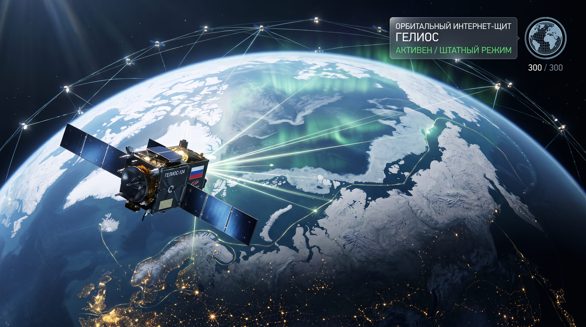
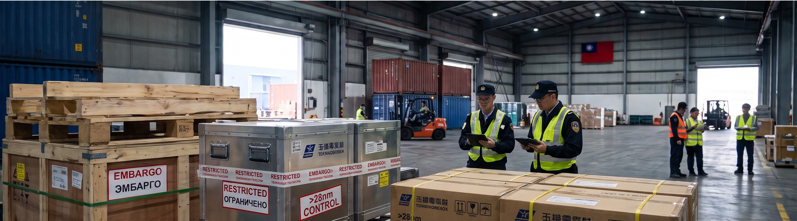
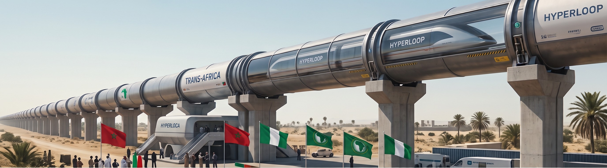
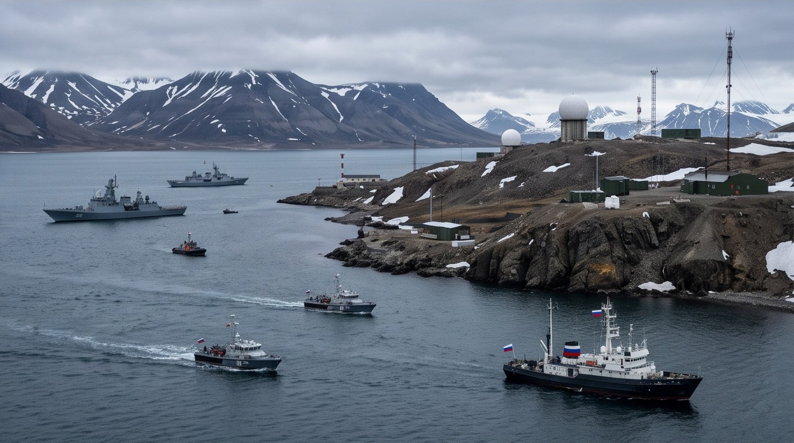

Общество
Демографический прорыв: Минцифры запускает платформу «Госуслуги.Знакомства»
В России заработал первый государственный сервис по подбору партнеров для создания семьи, интегрированный с единой системой здравоохранения
Читать далее>>>Инфраструктура
Магистраль «Квантовый Пояс» связала дата-центры Сибири и Урала
Корпорация «РосИнфоСеть» отчиталась о завершении прокладки первой в мире коммерческой линии связи на ультрастабильных кубитах
Читать далее>>>В миреВАЖНО
Водный кризис в Южной Азии: Нью-Дели и Исламабад садятся за стол переговоров
Резкое обмеление трансграничных рек из-за аномальной засухи вынудило ядерные державы начать экстренный саммит
Читать далее>>>Общество
Эксперимент по безусловному базовому доходу в Казани признан успешным
Министерство труда опубликовало итоговый отчет по трехлетнему пилотному проекту автоматических выплат гражданам
Читать далее>>>Экономика
Эра «редкоземельного стандарта»: Андская группа вводит новую расчетную единицу
Чили, Перу и Боливия объявили о создании единой цифровой валюты, привязанной к запасам лития и меди
Читать далее>>>Аналитика
Закат классического автопрома: почему конвейеры Европы останавливаются
Аналитический центр «Лентариум» разбирается в причинах системного кризиса европейских автомобильных гигантов
Читать далее>>>
Инфраструктура
Орбитальный интернет-щит «Гелиос» запущен в штатном режиме
Группировка из трехсот низкоорбитальных спутников связи полностью покрыла слепые зоны в арктических широтах
Читать далее>>>Инфраструктура
Модернизация национальных ЛЭП продлится до 2047 года
Минэнерго запускает 16-летнюю программу полной перестройки электросетевого комплекса страны.
Читать далее>>>В мире
Берлинский протокол: Центральная Европа перекраивает энергетическую карту
Пять государств ЕС подписали соглашение о строительстве замкнутого кольца модульных атомных реакторов малой мощности
Читать далее>>>Общество
Марш «Настоящих людей»: в Лионе против противников андроидов применили полимерные нейтрализаторы
Многотысячная демонстрация профсоюзов сферы услуг переросла в жесткие столкновения, вынудив жандармерию задействовать спецсредства нового поколения
Читать далее>>>Общество
«Цифровое завещание» стало обязательным пунктом при оформлении госуслуг
Госдума приняла закон, регулирующий права родственников на цифровые аватары и аккаунты умерших граждан.
Читать далее>>>
Экономика
Запретный кремний: Тайвань вводит полное эмбарго на экспорт чипов старых поколений
Правительство в Тайбэе объявило о прекращении поставок полупроводников литографии выше 28 нанометров в страны вне «белого списка
Читать далее>>>
Инфраструктура
Африканский экспресс: запущена трансконтинентальная вакуумная магистраль Hyperloop
Первая сверхскоростная транспортная артерия официально связала порты Танжера (Марокко) и Лагоса (Нигерия)
Читать далее>>>
В миреВАЖНО
Милитаризация Арктики: подписан пакт о разделе Шпицбергена
На фоне окончательного таяния летнего ледового покрова заполярные державы зафиксировали новые границы зон влияния
Читать далее>>>